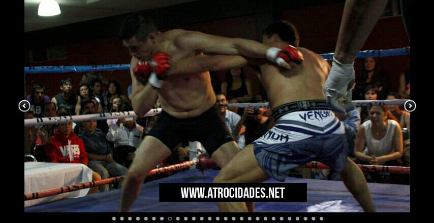

~~~Javier Elizalde Solis~~~

*I am the one in the Venum white and grey shorts*
I would like to share some of my proyects I have worked on in the first week of HolaCode
- Cookie Recipe
- For this one it uses HTML, and Unordered List. It is written in a more profesional way,
differing from My Favorite Things.
- My Favorite Things
- This proyect is very amature, it is also in the HTML languaje and it uses Unordered Lists with
a few pictures added in the one of the most simplests ways.
- The First Web Site Proyect I Ever Did
- With this following proyect it was the first one I had made that was published as a
website, it has images, it uses just a little bit of CSS
Background